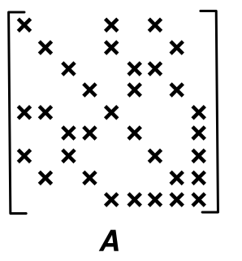
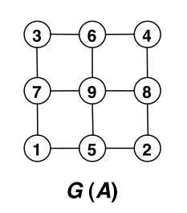
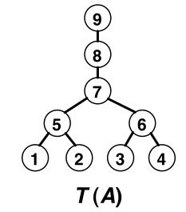
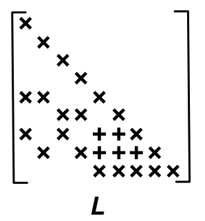

![]()
import numpy as np
from jax.experimental import sparse
import jax.numpy as jnp
A = jnp.array([[1, 0, 0, 0, 1, 0, 1, 0, 0],
[0, 1, 0, 0, 1, 0, 0, 1, 0],
[0, 0, 1, 0, 0, 1, 1, 0, 0],
[0, 0, 0, 1, 0, 1, 0, 1, 0],
[1, 1, 0, 0, 1, 0, 0, 0, 1],
[0, 0, 1, 1, 0, 1, 0, 0, 1],
[1, 0, 1, 0, 0, 0, 1, 0, 1],
[0, 1, 0, 1, 0, 0, 0, 1, 1],
[0, 0, 0, 0, 1, 1, 1, 1, 1]]) + 8 * jnp.eye(9)
A_csc = sparse.CSC.fromdense(A)Tutoriel sur la factorisation de Cholesky avec des matrices creuses
Note
L’objectif de ce tutoriel est d’appréhender (douloureusement) la factorisation de Cholesky pour des matrices sparses. Il s’inspire fortement de plusieurs ressources:
- 2 posts de blog de Dan Simpson post 1 et post 2
- 1 cours [C1] de Michael T Heath et Edgar Solomonik sur les systèmes linéaires sparses
- 1 cours [C2] de Grégoire Pichon sur les arbres d’élimination
Stratégie
Avertissement
La décomposition de Cholesky de \(A\) sous la forme \(L^\top L\) est unique. Cependant le fait de permuter les lignes (et colonnes de \(A\)) peut changer drastiquement le taux de remplissage de \(L\). Trouver la permutation optimale est NP-dur et de nombreuses heuristiques existent. On n’aborde pas ce problème ici et on suppose que \(A\) a déjà été réordonnée de façon (pseudo-)optimale.
La stratégie adoptée pour calculer une factorisation sparse de Cholesky \(A = L^\top L\) est la suivante:
- Partir d’une matrice sparse \(A\) (stockée au format CSC)
- Calculer l’arbre d’élimination de \(A\), noté \(\mathcal{T}_A\)
- Utiliser \(\mathcal{T}_A\) et \(A\) pour calculer le support de \(L\) (aussi appelée décomposition symbolique de \(A\))
- Calculer les coefficients non-nuls de \(L\) de façon récursive
- la récursion est dite left-looking et se fait sur les colonnes, la construction de la colonne \(j\) suppose que les colonnes \(0\) à \(j-1\) de \(L\) ont déjà été reconstruites
Note
On utilisera l’indexation Python (0-based) pour numéroter les colonnes de \(A\) et de \(L\).
On prendra comme exemple tout au long de ce document la matrice \(A\) dont le support est:

et dont le graphe \(G(A)\) est:

Arbre d’élimination (elimination tree)
Note
L’arbre d’élimination est un des deux ingrédients (avec le graphe associé à \(A\)) qui permet de calculer le support de \(L\) à partir du support de \(A\).
Soit \(i > j\), \(L_{ij} \neq 0\) si et seulement: - \(j\) est un descendant de \(i\) dans l’arbre \(\mathcal{T}_A\) et - il existe un chemin qui relie \(i\) à \(j\) dans le graphe de \(A\) (i.e le graphe dont la matrice d’adjacence est le support de \(A\)) en empruntant uniquement des descendants de \(j\) dans \(\mathcal{T}_A\).
Dans notre exemple, on cherche à reconstruire l’arbre suivant:

Important
L’arbre d’élimination n’est pas suffisant pour reconstruire le support de \(L\), on a besoin du graphe de \(A\).
La procédure suivante permet de reconstuire l’arbre d’élimination de \(A\). Elle est tirée du cours C2.
Note
Informellement, la procédure est récursive et parcourt les colonnes de \(A\) de gauche à droite. À l’étape \(j\), si l’arbre d’élimination a été reconstruit sur [0:j-1],
identifier les voisins \(i\) de \(j\) (i.e. les \(i\) tels que \(A_{ij} \neq 0\))
relier \(j\) au parent de l’arbre qui contient \(i\)
En pratique, on ne se contente pas de construire l’arbre, on en profite pour calculer à la volée le nombre d’éléments non-nuls dans la colonne L[:,j] en utilisant un parcours en profondeur de l’arbre raciné en j. La procédure suivante (tirée de post2) renvoie l’arbre (parent) et le nombre d’éléments non nuls de L[:,j] (col_count).
def etree_base(A_indices, A_indptr):
n = len(A_indptr) - 1
parent = [-1] * n
mark = [-1] * n
col_count = [1] * n
# Pour toutes les colonnes: visualiser la triangulaire supérieure !
for j in range(n):
# print("j=", j)
mark[j] = j
# print("nodes=",[A_indices[indptr] for indptr in range(A_indptr[j], A_indptr[j+1])])
# NODES === ROWS === INDICES, we go through the rows
# Pour toutes les lignes i(=node) tq Aij != 0 ie pour toutes les lignes i tq (i,j) \in G(A)
for indptr in range(A_indptr[j], A_indptr[j+1]):
# print(" new for")
node = A_indices[indptr]
# print(" node", node)
# Tant que node=i < j (ie. tant que je suis au dessus de la diag)
# ET mark[i] != j (ie. va éviter de refaire la procédure pour une ligne (i=node)
# déjà visitée depuis la colonne j, par procédure on entend le contenu du while :
# 1) ajouter +1 colonne pour la ligne i=row=node
# 2) chercher le parent et recommencer la procédure (que je vais nécessairement trouver dans une ligne de cette colonne, node=parent[node],
# ou que je vais mettre à la valeur j
# )
# Du coup pour éviter ça il faut que l'on mark la ligne i comme visitée depuis
# la colonne j (mark[node] = j) pour ne pas recommencer cette procédure
# qui pourrait reprendre depuis la prochaine valeur de node de la boucle for intérieure
while node < j and mark[node] != j:
# print(" new while")
# print(" node", node)
#print(" mark[node]=", mark[node])
# si i n'a pas de parent je mets la colonne j dans ce rôle
# parce qu'on est dans l'hypothèse que (i,j) \in G(A) (boucle extérieure) ie A_ij != 0
# ie. there must be a path from i to j in the tree,
# it means that the parent of this terminal node must be j.
if parent[node] == -1:
# print(" add link", node, "to", j)
parent[node] = j
mark[node] = j
# print(" new mark[node]=", mark[node])
col_count[node] += 1 # on ajoute + 1 colonne pour la ligne dont on a pris le noeud
# print(" col_count=", col_count)
node = parent[node]
# print(" new node", node)
# print(" end while")
# print(" end for")
# print(parent, col_count, mark)
return (parent, col_count)parent, col_count = etree_base(A_csc.indices, A_csc.indptr)
print("parent =", list(1+p for p in parent))
print("col_count =", col_count)parent = [5, 5, 6, 6, 7, 7, 8, 9, 0]
col_count = [3, 3, 3, 3, 4, 4, 3, 2, 1]Décomposition symbolique de Cholesky
Note
On sait grâce à l’arbre d’élimination combien d’éléments non nuls il y dans L[:,j]. La décomposition symbolique de Cholesky permet de déterminer quels sont les éléments non-nuls (formellement de déterminer les indices de ligne \(i\) tels que \(L_{ij}\)) pour construire la représentation CSC de \(L\).
En parallèle de cette construction (et pour des raisons dans la section sur le calcul des coefficients), on trace les colonnes \(i\) de \(L\) (avec \(i < j\) par construction) qui seront utilisées plus tard pour le calcul effectif des élements de L[:,j]. Il s’agit des colonnes \(i\) pour lesquels \(L_{ji} \neq 0\) (éléments non-nuls de la \(j\)-ème ligne). Cela revient en pratique à construire la représentation CSR de \(L\).
La procédure suivante permet de déterminer les éléments non nuls de L[:,j] comme suit. Pour la colonne courante \(j\),
- on parcourt les voisins directs de \(j\) dans \(A\)
- pour chacun de ces voisins \(i\) , si c’est un descendant de \(j\) dans \(\mathcal{T}_A\) (c’est à dire si \(i < j\)), alors on rajoute tout le chemin qui relie \(i\) à \(j\) dans \(\mathcal{T}_A\) dans le support de \(L\) (à la fois en mode CSC et CSR).
def symbolic_cholesky_base(A_indices, A_indptr, parent, col_count):
n = len(A_indptr) - 1 # matrix size
row_useful = [[] for j in range(n)]
L_indices = np.zeros(sum(col_count), dtype=int) # Rappel:
# L_indices contient les numéro de ligne de tous les éléments non nuls)
L_indptr = np.zeros(n+1, dtype=int)
L_indptr[1:] = np.cumsum(col_count) # à ce moment là L_indptr est totalement connu
mark = [-1] * n
col_ptr = np.repeat(1, n+1) # col_ptr pointe vers la ligne du prochain élément à remplir
# pour chaque colonne (chaque slot) (via l'indice dans le vecteur colonne-wise de la matrice L)
# la cinquième colonne de col_ptr ne sert à rien ?!
col_ptr[1:] += np.cumsum(col_count)
# print(len(L_indices), col_ptr)
# pour toutes les colonnes car j parcourt L_indptr et chaque slot de L_indptr
# represente une colonne
for j in range(n):
mark[j] = j # ???
L_indices[L_indptr[j]] = j # La ligne du premier élément non nul pour une nouvelle colonne j
# est forcément j (on est sur la diagonale).
# NODES === ROWS === INDICES, we go through the rows
# Pour toutes les lignes i(=node) tq Aij != 0 ie pour toutes les lignes i tq (i,j) \in G(A)
for indptr in range(A_indptr[j], A_indptr[j+1]):
node = A_indices[indptr]
# Tant que node=i < j (ie. tant que je suis au dessus de la diag)
# ET mark[i] != j (ie. va éviter de refaire la procédure pour une ligne (i=node)
# déjà visitée depuis la colonne j.
# IE dans l'exemple avec A = ..., dans la colonne 4 (j=3), on voit la ligne 2 (node=i=1) depuis le deuxième
# tour de while de indptr = 0. Il faut éviter de refaire la procédure pour la ligne 2 lorsque
# indptr = 1.
while node < j and mark[node] != j:
mark[node] = j
L_indices[col_ptr[node]] = j
row_useful[j].append(node)
col_ptr[node] += 1
node = parent[node]
return (L_indices, L_indptr, row_useful)L_indices, L_indptr, row_useful = symbolic_cholesky_base(A_csc.indices, A_csc.indptr, parent, col_count)
print(L_indices[0:3], row_useful[5])[0 4 6] [Array(2, dtype=int32), Array(3, dtype=int32)]
L_indices[0:3]) sont dans les lignes 1, 5 et 7 et que les éléments non nuls de la ligne 6 (row_useful[5]) sont dans les colonnes 3 et 4.Calcul effectif des coefficients de \(L\)
Équations de récursion
Le calcul de L (une fois son support connu) se fait via les équations de récursions suivantes données ici pour la colonne \(j=5\) et utilisant le fait que si \(L_{ji} = 0\), la colonne \(i\) n’est pas utilisée pour la mise à jour de \(j\).
Initialisation \[ \begin{pmatrix} t_{1}\\ 0\\ t_{2}\\ t_{3}\\ t_{4}\\ \end{pmatrix} = \begin{pmatrix} a_{55}\\ 0\\ 0\\ 0\\ a_{95}\\ \end{pmatrix} \]
Mise à jour \[ \begin{pmatrix} t_{1}\\ 0\\ t_{2}\\ t_{3}\\ t_{4}\\ \end{pmatrix} = \begin{pmatrix} t_{1}\\ 0\\ t_{2}\\ t_{3}\\ t_{4}\\ \end{pmatrix} - l_{51} . \begin{pmatrix} l_{51}\\ 0\\ l_{71}\\ 0\\ 0\\ \end{pmatrix} - l_{52} . \begin{pmatrix} l_{52}\\ 0\\ 0\\ l_{82}\\ 0\\ \end{pmatrix} \]
Calcul dans \(L\) \[ \begin{pmatrix} l_{51}\\ 0\\ l_{52}\\ l_{53}\\ l_{54}\\ \end{pmatrix} = \frac{1}{\sqrt{t_{1}}} . \begin{pmatrix} t_{1}\\ 0\\ t_{2}\\ t_{3}\\ t_{4}\\ \end{pmatrix} \]
Avertissement
Les représentations CSC utilisées jusqu’à présent pour calculer le support de \(L\) (à savoir L_indices et L_indptr) utilisait l’expression de \(A\) sous forme symmétrique. La représentation CSC de \(L\) est la même suivant qu’on utilise \(L\) ou sa partie triangulaire inférieure (puisque \(L\) est par construction triangulaire inférieure). Pour initialiser \(L_x\), on a donc besoin de partir de la représentation CSC triangulaire inférieure de \(A\) uniquement.
Comme \(L\) et \(A\) n’ont pas le même support (L_x est plus long que A_x), il faut attention au moment d’initialiser \(L\) à partir de \(A\) _deep_copy_csc permet d’initialiser L_x avec la bonne longeur et les valeurs de A_x placées au bon endroit.
def _deep_copy_csc(A_indices, A_indptr, A_x, L_indices, L_indptr):
n = len(A_indptr) - 1
L_x = np.zeros(len(L_indices))
for j in range(0, n):
copy_idx = np.nonzero(np.isin(L_indices[L_indptr[j]:L_indptr[j + 1]],
A_indices[A_indptr[j]:A_indptr[j+1]]))[0]
L_x[L_indptr[j] + copy_idx] = A_x[A_indptr[j]:A_indptr[j+1]]
return L_xA_tril = np.tril(A)
A_tril_csc = sparse.CSC.fromdense(A_tril)
L_x = _deep_copy_csc(A_tril_csc.indices, A_tril_csc.indptr, A_tril_csc.data, L_indices, L_indptr) # il faut initialiser L_x avec la bonne longeur mais aussi les valeurs de A placées au bon endroit
# c'est le rôle de deep_copy_csc
print(L_x)[9. 1. 1. 9. 1. 1. 9. 1. 1. 9. 1. 1. 9. 0. 0. 1. 9. 0. 0. 1. 9. 0. 1. 9.
1. 9.]
Note
On constate bien que _deep_copy_csc a recopié les valeurs de A_x dans L_x mais en y ajoutant des \(0\).
Au sujet de JIT
On souhaite ne pas construire la liste descendant à chaque fois, ce qu’on veux jitter c’est cette dernière fonction: à structure donnée on veut calculer les valeurs de L. L_indices et L_indptr ne changent pas ! On va essayer de modifier l’algorithme d’élimination tree pour quelle retourne la liste des descendants.
Calcul effectif de L_x
La fonction reprend celle décrite dans post 1 mais met à profit la représentation CSR (row_useful) précédemment calculée pour ne pas avoir à déterminer les colonnes utiles au moment du calcul de L[:j].
Important
Il y a un peu de manipulation pénible à faire sur les
L[:i]pour en extraire la sous-partie utile au calcul deL[:j].On ne peut jitter le code en l’état actuel
def _sparse_cholesky_csc_impl_modif(L_indices, L_indptr, L_x, row_useful):
n = len(L_indptr) - 1
# parcours sur colonnes
for j in range(0, n):
tmp = np.copy(L_x[L_indptr[j]:L_indptr[j + 1]]) # j-eme colonne de L, ie il ne faut pas de valeur manquante (même structure de sparsité
# dans 1ere col de L et de A (oui il suffit de voir l'algo e_tree pour j=0, on a un seul noeud dans cet e_tree)
# MAJ de la colonne courante avec le contenu de
for k in row_useful[j]: # voir eq slice 1/37
# if (k == row_useful[j][0]):
# print("########## Looking at column", j)
# print("With non nul rows:", L_indices[L_indptr[j]:L_indptr[j+1]])
# print("Current value of column j:", tmp)
# print("#### Looking at column", k, "to update column", j)
# print("#### Value of column", k, L_x[L_indptr[k]:L_indptr[k+1]])
## row indices higher than j in column k which is required to update column j
col_k_ind = L_indices[L_indptr[k]:L_indptr[k+1]]
## find element corresponding to row j in column k
pad = np.where(L_indices[L_indptr[k]:L_indptr[k+1]] == j)[0][0]
# print(L_indices[L_indptr[k]:L_indptr[k+1]], pad)
Ljk = L_x[L_indptr[k] + pad]
# print("Ljk =", Ljk)
col_k_ind = L_indices[(L_indptr[k] + pad):L_indptr[k+1]]
update_idx = np.nonzero(np.isin( \
L_indices[L_indptr[j]:L_indptr[j+1]], col_k_ind \
))[0]
# print("row indices that should be updated using values from columun k:", col_k_ind)
# print("row indices updated in column j:", L_indices[L_indptr[j]:L_indptr[j+1]][update_idx])
## Update only required elements
# print(col_k_ind)
# print("Update of column j:", L_x[(L_indptr[k] + pad):L_indptr[k+1]])
tmp[update_idx] = tmp[update_idx] - Ljk * L_x[(L_indptr[k] + pad):L_indptr[k+1]]
# print("Current value of column j:", tmp)
# pad = np.nonzero( \
# L_indices[L_indptr[k]:L_indptr[k+1]] == L_indices[L_indptr[j]])[0][0]
# update_idx = np.nonzero(np.in1d( \
# L_indices[L_indptr[j]:L_indptr[j+1]], \
# L_indices[(L_indptr[k] + pad):L_indptr[k+1]]))[0]
# tmp[update_idx] = tmp[update_idx] - \
# Ljk * L_x[(L_indptr[k] + pad):L_indptr[k + 1]]
diag = np.sqrt(tmp[0])
L_x[L_indptr[j]] = diag
L_x[(L_indptr[j] + 1):L_indptr[j + 1]] = tmp[1:] / diag # calcul de la j-eme col de L sauf diag.
# print(tmp[1:].shape, L_x[(L_indptr[j] + 1):L_indptr[j + 1]].shape)
# print("Final value of tmp:", (tmp[1:] / diag))
# print("Final value of column j:", L_x[(L_indptr[j] + 1):L_indptr[j + 1]])
# Pour le cas j=0 il nous faut bien
# que la struct de sparsité de A de la première col soit celle de L
return L_xL_x_recons = _sparse_cholesky_csc_impl_modif(L_indices, L_indptr, np.copy(L_x), row_useful)L_recons_csc = sparse.CSC((L_x_recons, L_indices, L_indptr), shape=(9,9))
L_recons = L_recons_csc.todense()
L_recons[:, 4]
L_true = np.linalg.cholesky(A)
L_true[:, 4]
A_ = (L_recons @ L_recons.T)
assert jnp.allclose(A_, A, atol=1e-7)
print("Victoire !!!!")Victoire !!!!À la précision machine près, notre cholesky sparse donne le même résultat que celle de numpy 🥳.